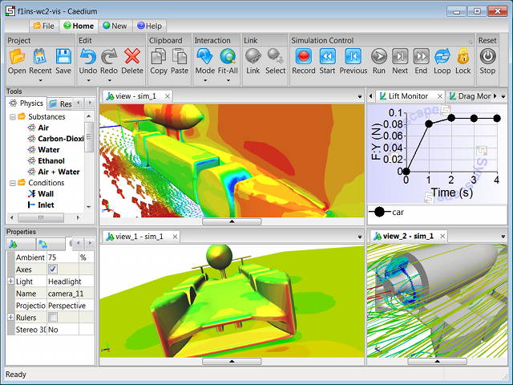

GPU Linear Solver Library for OpenFOAM
For the latest version of our Windows patch for OpenFOAM visit "OpenFOAM 2.2.x on Windows".
ofgpu is our free GPL library that provides GPU (sometimes referred to as GPGPU) linear solvers for OpenFOAM®. Sponsored by the Microsoft DPE team, the library targets NVIDIA CUDA devices on Windows, Linux, and (untested) Mac OS X. While this effort is still in the experimental stage, GPU acceleration holds the promise of providing significant speed up at relatively low cost and with low power consumption compared to other alternatives. If you want to try our ofgpu library with OpenFOAM then we recommend that you use either a dedicated (i.e., not displaying graphics) high-performance NVIDIA graphics card or a TESLA card.
OpenFOAM GUI
Are you looking for a GUI driven, integrated simulation environment with GPU support for Windows and Linux with NVIDIA CUDA devices incorporating a selection of the RANS OpenFOAM solvers and various import/export filters?


Background
In our ofgpu library we use the Cusp library's Krylov solvers to produce equivalent GPU (CUDA) versions of the standard OpenFOAM linear solvers:
- PCG - Preconditioned conjugate gradient solver for symmetric matrices (e.g., p)
- PBiCG - Preconditioned biconjugate gradient solver for asymmetric matrices (e.g., Ux, k)
We also have support in ofgpu for the OpenFOAM preconditioners:
- no
- diagonal
Providing better preconditioners, such as DILU (asymmetric) and DIC (symmetric), is clearly an area for further work.
We have not yet performed any benchmarks.
Prerequisites
- You are familiar with the OpenFOAM build process
- You are familiar with CMake
- You have a CUDA-capable NVIDIA device, such as a TESLA C2070
Preparation
Install and test:
- Latest NVIDIA graphics driver
- Latest CUDA Toolkit (including Thrust) and GPU Computing SDK
- Cusp - sparse linear algebra library
- CMake - cross platform make
- OpenFOAM 1.7.x source - git commit: 14b79332ee4a1827656951db39fe81cc5ba52d78, Date: Tue Nov 16 20:41:48 2010
Build Procedure
This build procedure assumes single precision.
- Download our free GPL licensed ofgpu library [last update April 23, 2011 to v0.1].
- Configure and generate the build system for ofgpu with CMake, Set the
CMAKE_INSTALL_PREFIXvariable to<ofgpu-root>/install - Build ofgpu
- On *nix systems
make installand create the symbolic link:ln -s <ofgpu-root>/install/release/lib <ofgpu-root>/install/lib - For Windows you will need to build ofgpu natively using Visual Studio and then transfer ofgpu.dll and ofgpu.lib to your Linux system for cross compiling. Place your natively compiled Windows files in
<ofgpu-root>/install/win/libon your Linux system.
- On *nix systems
- Patch your OpenFOAM source with our CUDA modifications [last updated May 3, 2011 to v7]. This is the same source code patch that adds Windows support for OpenFOAM.
chmod ug+x <OpenFOAM-root>/src/gpu/Allwmake- Build OpenFOAM in the usual manner, but with the addition of the environment variables:
export WM_GPU='CUDA'export CUDA_ARCH_PATH=<ofgpu-root>
The build process will produce the following 2 new OpenFOAM libraries:
<OpenFOAM-root>/lib/<platform>/cuda/[lib]gpu.[so|dll]<OpenFOAM-root>/lib/<platform>/gpuless/[lib]gpu.[so|dll]
Under Windows you will need to have the <OpenFOAM-root>/lib/<platform>/cuda directory in your executable path to use the library.
Example Case
For an example of a GPU-enabled case try pitzDailyGpu.
The GPU library is loaded in <case>/system/controlDict with libs("gpu").
As an example the p and U linear solvers in the <case>/system/fvSolution file are modified as follows:
p
{
solver PCGgpu;
preconditioner diagonal;
tolerance 1e-06;
relTol 0.01;
}
U
{
solver PBiCGgpu;
preconditioner diagonal;
tolerance 1e-05;
relTol 0.1;
}
If you don't export the WM_GPU='CUDA' variable on *nix or you put the <OpenFOAM-root>/lib/<platform>/gpuless directory in your Windows executable path then the 'dummy' gpu library will be used, which defaults to the standard OpenFOAM PCG and PBiCG solvers .
Notes
Feedback
Questions? Ideas? Problems?

Comments
Are there any plans to port the library to OpenCl / ATI stream?
As current mainstream ATI cards offer far higher double precision performance e.g. ATI 5870 = 544 GigaFLOPS is there a plan to port the library to OpenCl/ATI stream.
No OpenCL/ATI Stream Support
No plans at the moment. We use Cusp and Thrust which are high level APIs based on CUDA - I'm not aware of equivalent APIs for OpenCL or ATI Stream. If you are willing to sponsor such an effort we could look into it.
Speedups are much better for single precision (float) over double precision (double) on GPUs, if you can tolerate it. For simple fluid flow and heat transfer I've found single precision on the CPU to be fine, with the added benefit of the reduced memory requirement. I'm sure you know that floats require half the memory of doubles.
The performance advantage between ATI (AMD) and NVIDIA is continually shifting, so there's no guarantee that ATI will maintain its lead when the next generation of GPUs emerge.
cusp, thrust... installation problem
I am using the latest cuda 3.2 on Linux Mint (=Ubuntu 10.10).
In order to be able to create the cusp installation/version confirmation test program "version" I had to install thrust as described in the cusp installation README file even so the above statement says it's included in the cuda toolkit.
The verification failed as libcudart.so.3 was no found. This file is located in the standard location of the standard cuda toolkit installation paths /usr/local/cuda/lib64 and /usr/local/cuda//lib.
How to build the ofgpu library? cmake doesn't find the source?!
How to set the CMAKE_INSTALL_PREFIX variable as /install - is that the first step of the building process?
Versions and CMake
Here's the versions I used:
You need to configure ofgpu with CMake e.g.,:
I don't get the CMake part
As I have no clue about programming, this is what I understood:
1. unpack ofgpu-0_1.tgz
2. within "/ofgpu-root" create a subdirectory /obj/release using mkdir -p "/ofgpu-root"/obj/release
3. ccmake "/ofgpu-root"/src , then the ccmake menu is displayed in the terminal
4. in the ccmake menu press [enter] to edit/set the parameters and path e.g. to the cuda sdk and the CMAKE_INSTALL_PREFIX to "/ofgpu-root"/install
5. in the ccmake menu press [c] to configure
6. create the symbolic link: ln -s "/ofgpu-root"/install/release/lib "/ofgpu-root"/install/lib
7. make install
where "/ofgpu-root" is the path to the ofgpu directory created when unpacking ofgpu-0_1.tgz e.g. /home/user/OpenFOAMSP/ofgpu
Problems:
> there is no /install, /install/release, /install/lib directory in "/ofgpu-root"
> no idea whether 5. had any effect
> what's the directory from which make install has to be executed?
> isn't there make required before make install?
Time to Become a Programmer
ccmake requires you [c]onfigure possibly multiple times until the option to [g]enerate appears, then press [g]. Keep an eye on the build messages and errors if any.
Without programming experience you are going to struggle with this project. Believe it or not, the ofgpu build process is easy compared to the OpenFOAM build process.
I am nearly there
Building OpenFOAM isn't a problem (anymore) - takes me 45 minutes using 4 cores. I've done it a couple of times.
Back to my "little" ofgpu problems:
1. ln -s /install/release/lib /install/lib doesn't match the file structure I end up with - I think it should do to create the directories "ofgou-root"/install/lib and "ofgou-root"/install/release/lib and copy the generated library libofgpu.so into both directories?! .. so it will be available during the OpenFOAM build process.
2. How to apply the patch on linux? I end up with several pages of "error messages" in the terminal, e.g.:
...
Hunk #1 FAILED at 60.
1 out of 1 hunk FAILED -- saving rejects to file octreeDataTriSurfaceTreeLeaf.H.rej
patching file octreeDataTriSurfaceTreeLeaf.C
Hunk #1 FAILED at 31.
1 out of 1 hunk FAILED -- saving rejects to file octreeDataTriSurfaceTreeLeaf.C.rej
patching file files
...
Apply Source Patch to Specific Version of OpenFOAM
If you've set MAKE_INSTALL_PREFIX = <ofgpu-root>/install correctly then after issuing make install it will create libofgpu.so in <ofgpu-root>/install/release/lib.
You have to apply the OpenFOAM source code patch to the specific version of OpenFOAM that corresponds to:
git commit: 14b79332ee4a1827656951db39fe81cc5ba52d78, Date: Tue Nov 16 20:41:48 2010
i.e.,
git clone http://github.com/OpenCFD/OpenFOAM-1.7.x.gitcd OpenFOAM-1.7.xgit checkout 14b79332ee4a1827656951db39fe81cc5ba52d78still lots of errors
...
1 out of 1 hunk FAILED -- saving rejects to file files.rej
patching file bashrc
Hunk #1 FAILED at 109.
Hunk #2 FAILED at 131.
Hunk #3 FAILED at 222.
3 out of 3 hunks FAILED -- saving rejects to file bashrc.rej
patching file controlDict
Hunk #1 FAILED at 853.
1 out of 1 hunk FAILED -- saving rejects to file controlDict.rej
patching file settings.sh
Hunk #1 FAILED at 216.
Hunk #2 FAILED at 230.
Hunk #3 FAILED at 330.
Hunk #4 FAILED at 350.
4 out of 4 hunks FAILED -- saving rejects to file settings.sh.rej
patching file Allwmake
Hunk #1 FAILED at 13.
1 out of 1 hunk FAILED -- saving rejects to file Allwmake.rej
...
Check patch command
Are you sure you have the correct version of OpenFOAM now?
Have you made any local mods to your version of OpenFOAM?
I suggest using a clean copy of the repository.
How are you applying the patch?
You should be using:
patch -p0 -i v7-mingw-openfoam-1-7-x.patchI am using a clean copy of
I am using a clean copy of the defined version of OpenFOAM without any modifications and end up a log list of error messages - just tried it again.
Some things are patched, but most things are rejected.
Recap
I just re-checked and it works fine for me. To recap the commands are (with output below in italics):
git clone http://github.com/OpenCFD/OpenFOAM-1.7.x.gitInitialized empty Git repository in /home/rjs/OpenFOAM-1.7.x/.git/
remote: Counting objects: 42037, done.
remote: Compressing objects: 100% (14507/14507), done.
remote: Total 42037 (delta 27217), reused 41452 (delta 26767)
Receiving objects: 100% (42037/42037), 46.70 MiB | 354 KiB/s, done.
Resolving deltas: 100% (27217/27217), done.
cd OpenFOAM-1.7.xgit checkout 14b79332ee4a1827656951db39fe81cc5ba52d78Note: checking out '14b79332ee4a1827656951db39fe81cc5ba52d78'.
You are in 'detached HEAD' state. You can look around, make experimental
changes and commit them, and you can discard any commits you make in this
state without impacting any branches by performing another checkout.
If you want to create a new branch to retain commits you create, you may
do so (now or later) by using -b with the checkout command again. Example:
git checkout -b new_branch_name
HEAD is now at 14b7933... BUG: polyTopoChange : cell from face created objectMap with -1.
gunzip <tmp>/v7-mingw-openfoam-1-7-x.patch.gzpatch -p0 -i <tmp>/v7-mingw-openfoam-1-7-x.patch...
patching file etc/bashrc
patching file etc/controlDict
patching file etc/settings.sh
patching file Allwmake
patching doesn't work
I do exactly the same and the output is exactly the same until I apply the patch - when I patch the file, I get the following...
patching file mingw-extra/scotch/src/Make.inc/Makefile.inc.mingw-w64
patching file mingw-extra/scotch/src/Make.inc/Makefile.inc.darwin32
patching file mingw-extra/scotch/src/libscotch/common.c
patching file mingw-extra/scotch/src/libscotch/Makefile
patching file wmake/rules/linux64Gcc/gpulibCUDA
patching file wmake/rules/linux64Gcc/c
Hunk #1 FAILED at 12.
1 out of 1 hunk FAILED -- saving rejects to file wmake/rules/linux64Gcc/c.rej
patching file wmake/rules/linux64Gcc/c++
Hunk #1 FAILED at 17.
1 out of 1 hunk FAILED -- saving rejects to file wmake/rules/linux64Gcc/c++.rej
patching file wmake/rules/linux64Gcc/general
Hunk #1 FAILED at 1.
1 out of 1 hunk FAILED -- saving rejects to file wmake/rules/linux64Gcc/general.rej
patching file wmake/rules/linux64mingw-w64/c++Debug
patching file wmake/rules/linux64mingw-w64/gpulibCUDA
patching file wmake/rules/linux64mingw-w64/c
patching file wmake/rules/linux64mingw-w64/mplibMPICH
patching file wmake/rules/linux64mingw-w64/mplibMPICH-GM
patching file wmake/rules/linux64mingw-w64/cDebug
patching file wmake/rules/linux64mingw-w64/mplibOPENMPI
patching file wmake/rules/linux64mingw-w64/c++Opt
patching file wmake/rules/linux64mingw-w64/c++Prof
patching file wmake/rules/linux64mingw-w64/mplib
patching file wmake/rules/linux64mingw-w64/cOpt
patching file wmake/rules/linux64mingw-w64/mplibGAMMA
patching file wmake/rules/linux64mingw-w64/X
patching file wmake/rules/linux64mingw-w64/c++
patching file wmake/rules/linux64mingw-w64/cProf
patching file wmake/rules/linux64mingw-w64/mplibMSMPI
patching file wmake/rules/linux64mingw-w64/general
patching file wmake/rules/darwinGcc/c++Debug
patching file wmake/rules/darwinGcc/gpulibCUDA
patching file wmake/rules/darwinGcc/c
patching file wmake/rules/darwinGcc/mplibMPICH
patching file wmake/rules/darwinGcc/mplibMPICH-GM
patching file wmake/rules/darwinGcc/cDebug
patching file wmake/rules/darwinGcc/mplibOPENMPI
patching file wmake/rules/darwinGcc/c++Opt
patching file wmake/rules/darwinGcc/c++Prof
patching file wmake/rules/darwinGcc/mplibHPMPI
patching file wmake/rules/darwinGcc/mplib
patching file wmake/rules/darwinGcc/cOpt
patching file wmake/rules/darwinGcc/mplibGAMMA
patching file wmake/rules/darwinGcc/X
patching file wmake/rules/darwinGcc/c++
patching file wmake/rules/darwinGcc/cProf
patching file wmake/rules/darwinGcc/general
patching file wmake/rules/linuxGcc/general
Hunk #1 FAILED at 1.
1 out of 1 hunk FAILED -- saving rejects to file wmake/rules/linuxGcc/general.rej
patching file wmake/wmakeLnInclude
Hunk #1 FAILED at 149.
1 out of 1 hunk FAILED -- saving rejects to file wmake/wmakeLnInclude.rej
patching file wmake/wcleanAll
Hunk #1 FAILED at 53.
1 out of 1 hunk FAILED -- saving rejects to file wmake/wcleanAll.rej
patching file wmake/wmake
Hunk #1 FAILED at 164.
1 out of 1 hunk FAILED -- saving rejects to file wmake/wmake.rej
patching file wmake/Makefile
Hunk #1 FAILED at 94.
Hunk #2 FAILED at 146.
Hunk #3 FAILED at 171.
3 out of 3 hunks FAILED -- saving rejects to file wmake/Makefile.rej
patching file applications/utilities/postProcessing/dataConversion/foamToGMV/foamToGMV.C
Hunk #1 FAILED at 36.
Hunk #2 FAILED at 43.
2 out of 2 hunks FAILED -- saving rejects to file applications/utilities/postProcessing/dataConversion/foamToGMV/foamToGMV.C.rej
patching file applications/utilities/postProcessing/dataConversion/foamToGMV/Make/options
Hunk #1 FAILED at 10.
1 out of 1 hunk FAILED -- saving rejects to file applications/utilities/postProcessing/dataConversion/foamToGMV/Make/options.rej
patching file applications/utilities/postProcessing/dataConversion/foamToEnsightParts/foamToEnsightParts.C
Hunk #1 FAILED at 64.
Hunk #2 FAILED at 73.
...
and these error messages continue for 986 lines.
Clues in the .rej files
Have a look at the *.rej files and see if they provide any clues as to the problem.
Could the problem be related to write permissions on the files being patched? It appears that new file creation succeeds.
Parallel version of OpenFoam using this Cuda library?
Hello,
is it possible to use the parallel version of OpenFoam using this Cuda library and/or do you plan to make it possible in the future even supporting multigpu clusters?
thank you
Francesco
I gave full permission...
... chmod -R 777 ...
the issue remains?!
Sponsorship
"is it possible to use the parallel version of OpenFoam using this Cuda library and/or do you plan to make it possible in the future even supporting multigpu clusters?"
No, currently we don't support parallel (MPI) and CUDA.
Would you like to sponsor multi-gpu cluster work?
At a loss
"the issue remains?!"
I'm at a loss, I don't know what the problem is with your setup. It seems others have been successful with the approach I've described over at CFD-Online.
ofgpu does not compile with cusp (v0.2.0) and thrust (v1.4.0)
The ofgpu does not compile with the latest cusp (v0.2.0) and thrust (v1.4.0) versions. When will the new update for ofgpu available.
Fund next ofgpu release
Thanks for the feedback. Would you like to sponsor the next ofgpu release?
I am only a enthusiast user
I am only a enthusiast user of open source based OSes and cfd tools with parallel computations based on cpu and gpu.
wmake libso cuda error
I could not manage to build OpenFOAM with ofgpu. It seems no success in "wmake libso cuda" part. I would appreciate for help. The error message is as below.
[gpu_user@cuda_of gpu]$ ./Allwmake
+ wmake libso gpuless
'/home/gpu_user/OpenFOAM/OpenFOAM-1.7.x/lib/linux64GccDPOpt/gpuless/libgpu.so' is up to date.
+ case "$WM_GPU" in
+ wmake libso cuda
SOURCE=PBiCGgpu.C ; g++ -m64 -Dlinux64 -DWM_DP -Wall -Wextra -Wno-unused-parameter -Wold-style-cast -Wnon-virtual-dtor -O3 -DNoRepository -ftemplate-depth-40 -I/home/gpu_user/Downloads/ofgpu/src -IlnInclude -I. -I/home/gpu_user/OpenFOAM/OpenFOAM-1.7.x/src/OpenFOAM/lnInclude -I/home/gpu_user/OpenFOAM/OpenFOAM-1.7.x/src/OSspecific/POSIX/lnInclude -fPIC -c $SOURCE -o Make/linux64GccDPOpt/PBiCGgpu.o
PBiCGgpu.C: In member function ‘virtual Foam::lduMatrix::solverPerformance Foam::PBiCGgpu::solve(Foam::scalarField&, const Foam::scalarField&, Foam::direction) const’:
PBiCGgpu.C:91: error: no matching function for call to ‘ofgpu::SparseMatrixArgs::SparseMatrixArgs(const char*, Foam::label, Foam::label, const int*, const int*, const int*, const double*, const double*, const int*, const int*, const double*, double*, const double*, const Foam::label&, const Foam::scalar&, const Foam::scalar&, Foam::scalar&, Foam::scalar&, Foam::label&, bool&)’
/home/gpu_user/Downloads/ofgpu/src/ofgpu/sparsematrixargs.h:46: note: candidates are: ofgpu::SparseMatrixArgs::SparseMatrixArgs(const char*, ofgpu::index, ofgpu::index, const ofgpu::index*, const ofgpu::index*, const ofgpu::index*, const ofgpu::real*, const ofgpu::real*, const ofgpu::index*, const ofgpu::index*, const ofgpu::real*, ofgpu::real*, const ofgpu::real*, ofgpu::index, ofgpu::real, ofgpu::real, ofgpu::real&, ofgpu::real&, ofgpu::index&, bool&)
/home/gpu_user/Downloads/ofgpu/src/ofgpu/sparsematrixargs.h:24: note: ofgpu::SparseMatrixArgs::SparseMatrixArgs(const ofgpu::SparseMatrixArgs&)
make: *** [Make/linux64GccDPOpt/PBiCGgpu.o] Error 1
Mismatch in real number precision
It appears that you are trying to compile OpenFOAM as double precision (double) and ofgpu as single precision (float).
You have two options:
export WM_PRECISION_OPTION=SPand recompile OpenFOAM-DOF_DOUBLE_PRECISIONduring the CMake configuration stage, and recompile ofgpuI'll guess that you'd rather recompile ofgpu for double precision, but note that you'll likely see degraded CUDA performance compared to single precision.
cannot find -lofgpu
Thanks for your help. When I tried to recompile OpenFOAM with export WM_PRECISION_OPTION=SP, the following error message is displayed. I have already used the environment varible for CUDA_ARCH_PATH=/home/gpu_user/Downloads/ofgpu.
The directory structure of ofgpu is as follows:
ofgpu --> obj, src
obj --> lib, release
lib --> libofgpu.so
release --> CMakeCache.txt, cmake_install.cmake, lib, ofgpu,
CMakeFiles, install_manifest.txt, Makefile
I would appreciate for help.
[gpu_user@cuda_of gpu]$ ./Allwmake
+ wmake libso gpuless
'/home/gpu_user/OpenFOAM/OpenFOAM-1.7.x/lib/linux64GccSPOpt/gpuless/libgpu.so' is up to date.
+ case "$WM_GPU" in
+ wmake libso cuda
/usr/bin/ld: cannot find -lofgpu
collect2: ld returned 1 exit status
make: *** [/home/gpu_user/OpenFOAM/OpenFOAM-1.7.x/lib/linux64GccSPOpt/cuda/libgpu.so] Error 1
Missing install directory
Looks like you are missing the ofgpu install directory. Try reviewing the original ofgpu instructions, specifically:
2. Configure and generate the build system for ofgpu with CMake, Set the
CMAKE_INSTALL_PREFIXvariable to<ofgpu-root>/install3. Build ofgpu
On *nix systems
make installand create the symbolic link:ln -s /install/release/lib <ofgpu-root>/install/libSpeedups
Hi,
Can you give a bit more detail on speedup factors that you have experienced and in which circumstances? I understand single precisions will be faster (as per the capabilities of the gpu), but what level are we talking?
Also could you comment on the level of further development and additional features of the gpu libriaries by Symscape?
Thanks
Benchmarks and Sponsorship
I don't have any reliable benchmarks, as I don't currently have access to a high performance graphics card or a Tesla card. Maybe you do and you could run some benchmarks?
Further development is contingent on additional sponsorship. Any interest in supporting this work further?
Benchmark
I ran the pitzDailyGpu tutorial using 1.66 GHz Nvidia GeForce GTX 560 Ti GPU with 384 cores and 2.66 GHz Intel Core 2 Quad CPU for 500 time steps;
GPU based solver --> Clock time = 147 s
CPU based solver --> Clock time = 54 s
Why is the GPU based solver taking more computational time?
Thanks for your feedback
Thanks for reporting back your benchmark.
I wonder if this case is too small to see any speedup, i.e., it's data bound. Could you try increasing the case size in increments of x 10 and report back?
Also I'd check to see that the GPU and CPU linear solvers are both performing the same number of inner iterations for each variable during each time step.
Benchmark update
Thanks for your help. I increased the cell count by a factor of 10 i.e., to 122250 in the pitzDailyGpu tutorial and ran using 1.66 GHz Nvidia GeForce GTX 560 Ti GPU with 384 cores and 2.66 GHz Intel Core 2 Quad CPU for 400 time steps.
GPU based solver --> Clock time = 304 s
CPU based solver --> Clock time = 890 s
I found the CPU based solver crashes well before that completion of the specified 1000 time steps in the controlDict file. Any thoughts on this issue will be helpful.
I need to also check whether GPU and CPU linear solvers are both performing the same number of inner iterations for each variable during each time step. I would report about the same shortly.
Great Work
I appreciate your efforts in running these benchmarks, thanks.
Not sure what the cause of the CPU solver crash could be. You might want to review the solver settings in fvSolution and experiment with the tolerances. Also to keep the two types of solvers synchronized, i.e., performing the same number of iterations you could try setting:
so each solver should in theory always perform 100 iterations.
Another interesting benchmark would be to compare a parallel CPU case with the serial GPU case.
Error running simpleFoam
Hi,
I'm trying to do a similar benchmark (to which I'll provide times here as well). pitzDaily runs fine but when I run simpleFoam on pitzDailyGpu, I get:
...
Starting time loop
Time = 1
terminate called after throwing an instance of 'std::bad_alloc'
what(): std::bad_alloc
Aborted
Any ideas? I'm new to openFoam, by the way. CUDA 4.0, Tesla C1060.
-J
ofgpu compile option for double precision error
I get the following error with nvcc compiler flags -DOF_DOUBLE_PRECISION. However if I use -arch=sm_13 instead it works, but ofgpu solver does not work giving the core dumped error.
make install
[ 33%] Building NVCC (Device) object ofgpu/./ofgpu_generated_sparsematrixsystem.cu.o
ptxas /tmp/tmpxft_00006001_00000000-2_sparsematrixsystem.ptx, line 481; warning : Double is not supported. Demoting to float
[ 66%] Building NVCC (Device) object ofgpu/./ofgpu_generated_pbicg.cu.o
ptxas /tmp/tmpxft_0000603c_00000000-2_pbicg.ptx, line 124; warning : Double is not supported. Demoting to float
[100%] Building NVCC (Device) object ofgpu/./ofgpu_generated_pcg.cu.o
ptxas /tmp/tmpxft_0000607a_00000000-2_pcg.ptx, line 124; warning : Double is not supported. Demoting to float
Scanning dependencies of target ofgpu
Linking CXX shared library libofgpu.so
[100%] Built target ofgpu
Install the project...
-- Install configuration: "release"
-- Installing: /home/gpu_user/ofgpu_dp/install/release/lib/libofgpu.so
-- Removed runtime path from "/home/gpu_user/ofgpu_dp/install/release/lib/libofgpu.so"
Haven't tried double precision
I haven't tried a double precision compilation, so any insights you find would be useful.
Difference betwenn PCG and PCGgpu runs
Thank you for this addition to the OpenFoam tools.
With little experiments wtih this package, I can say that only single-precision will give any improvement in running time with my setup. When my GPU's memory (GTX 260) is about half-full, I can get about 9~10 times faster results comparing to a 4-cores MPI run.
Now, the bad news: I don't know what is the cause of the differences between PCG and PCGgpu results, but I cannot do a complete run with the GPU solvers. The courant value starts rising after around 10 time steps and the program crashes. Looking at the sources listing I found that you are using
// sum of magnitudes, not really a norm which would be sqrt(sum of squares)
m_norm = thrust::transform_reduce(r.begin(), r.end(), unary_op, init, binary_op);
Do you think it should be sqrt(sum of squares) to get the same results as the CPU code?
This is the correct OpenFOAM norm definition
The comment in the ofgpu code reflects the standard definition of a norm, whereas OpenFOAM defines it as gSumMag(rA), where rA = source - wA, wA = A.psi, A = matrix, and psi = variable we are solving for. For reference see PCG.C:108.
In standard linear solver Ax = b terminology the equivalent is Sum (|b - Ax|). The norm is more often defined as Sqrt(Sum ((b - Ax)^2)).
Double Precision support on ATI/AMD
AMD Radeon cards provide far more peak "double precision performance" than NVIDIA. However, double precision is not supported with the ATI drivers!
OpenCL application cannot use the 64bit floating-point extension with ATI cards.
I'm really disappointed with ATI. They have a good peak performance, but no driver support :(
OF + CUDA
Hi, I'm interested in study wax deposition phenomena inside oil ducts (due to shear stress and temperature gradients the wax which flows with the oil inside pipes solidifies and reduce the efective area of the duct) using OF solver and CUDA. My question is, your software simplifies the whole process? (OF + CUDA integration). Thanks in advance for your reply. And happy new year!!!
Use standard OF first
ofgpu is a substitute for the standard OF linear solvers. What you do elsewhere in the code is up to you. I suggest you narrow your study to just the physics of your problem without complicating matters with CUDA at first. Once you get the standard OF linear solvers working for your modifications then you can consider integrating CUDA.